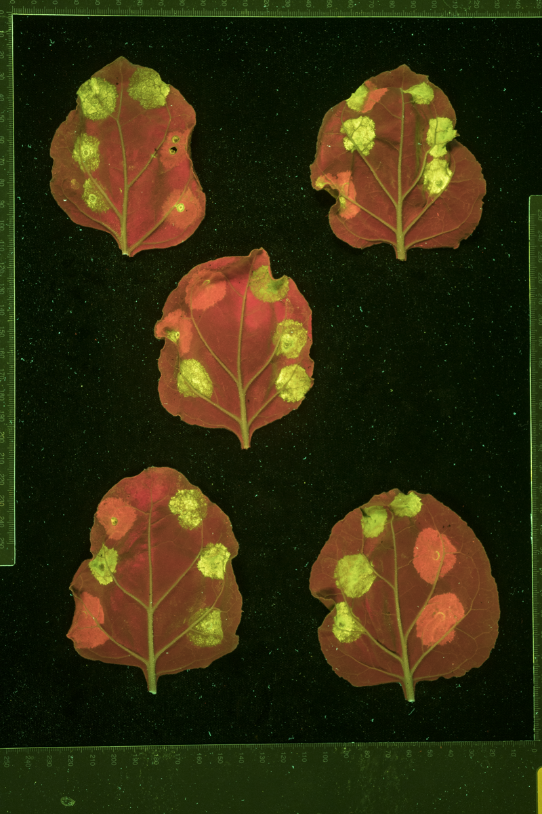

Code
# 1.1
library(readr)
library(ggplot2)
library(dplyr)
library(tidyr)
library(here)Date: 08/06/2026
Goal:
Investigate trends between source images, and between the projects they belong to.
# 1.1
library(readr)
library(ggplot2)
library(dplyr)
library(tidyr)
library(here)# 1.2
source(here("src", "data_helpers.R"))
source(here("src", "agreement_metrics.R"))
source(here("src", "resampling.R"))
source(here("src", "plotting_helpers.R"))
save_plot <- make_save_plot("04_project_level_analysis")# 1.2
# Anonymised project labels (Project A, Project B, ...), shared key.
project_key <- load_project_key()
project_lookup <- setNames(project_key$Anon_Label, project_key$Project)# 1.3
path_data <- here("analyses", "01_generate_raw_data", "04_median_and_centre_coords", "combined_cda_data_median.csv")
score_data <- read_csv(path_data, show_col_types = FALSE) %>%
select(Basename, Row, Col, Pos, Scorer1, Score1, Scorer2, Score2, Scorer3, Score3, Median_Score) %>%
mutate(
across(c(Scorer1, Scorer2, Scorer3), as.character),
across(c(Score1, Score2, Score3), ~ replace(as.character(.), . == "[]", NA))
)# 1.4
score_data_long <- long_score_table(score_data)# 1.5.1
score1_path <- here(
"analyses", "01_generate_raw_data", "03_checking_collected_coords", "combined_cda_data_checked_1.csv"
)
score2_path <- here(
"analyses", "01_generate_raw_data", "03_checking_collected_coords", "combined_cda_data_checked_2.csv"
)
count_path <- here("analyses", "01_generate_raw_data", "01_allocation_info", "image_info.csv")
# Scorer columns (scorer1/2/3) are already anonymised IDs in this file - see
# the anonymisation script under scripts/.
alloc_path <- here("analyses", "01_generate_raw_data", "01_allocation_info", "randomised_info_anon.csv")
score_data_1 <- read_csv(score1_path, show_col_types = FALSE)
score_data_2 <- read_csv(score2_path, show_col_types = FALSE)
image_info_project <- read_csv(count_path, show_col_types = FALSE)
randomised_info <- read_csv(alloc_path, show_col_types = FALSE) %>%
mutate(across(c(scorer1, scorer2, scorer3), as.character))
# Dual-infiltration images (each leaf received two infiltrations, producing
# both green and orange cell death areas; orange areas were ignored during
# scoring but not during source agro image allocation estimates) are all from
# Project C and Project H, per this column.
dual_lookup <- setNames(project_key$Dual_Infiltration, project_key$Anon_Label)
# Project membership is taken from image_info.csv (authoritative), not from the
# allocation paths in randomised_info.csv, which mislabel some images. The Path
# column is recorded once per folder, so it is filled downwards; the top-level
# folder is the real project, which is then mapped to its anonymised label.
basename_to_folder <- image_info_project %>%
fill(Path, .direction = "down") %>%
mutate(Folder = unname(project_lookup[sub("/.*", "", Path)])) %>%
select(Image, Folder) %>%
{
setNames(.$Folder, .$Image)
}
count_data_1 <- image_info_project %>% filter(Set == 1)
count_data_2 <- image_info_project %>% filter(Set == 2)
allocation_data_1 <- randomised_info %>% filter(Set == 1)
allocation_data_2 <- randomised_info %>% filter(Set == 2)# 1.5.2
new_columns <- function(allocation_data, count_data) {
allocation_data$Path <- gsub(
"^/Volumes/shared/Research-Groups/Mark-Banfield/Josh_Williams/", "", allocation_data$Path
)
merged_data <- merge(allocation_data, count_data, by.x = "basename", by.y = "Image", all.x = TRUE)
merged_data <- merged_data[order(match(merged_data$basename, allocation_data$basename)), ]
allocation_data$CDA_Per_Leaf <- merged_data$CDA_Per_Leaf
# Project label taken from image_info (authoritative), keyed on the image basename
allocation_data$Folder <- unname(basename_to_folder[allocation_data$basename])
# Dual-infiltration projects (orange CDAs ignored during scoring)
allocation_data$Dual_Infiltration <- unname(dual_lookup[allocation_data$Folder])
allocation_data
}
allocation_data_1 <- new_columns(allocation_data_1, count_data_1)
allocation_data_2 <- new_columns(allocation_data_2, count_data_2)
allocation_data_combined <- rbind(allocation_data_1, allocation_data_2)# 1.5.3
allocation_long <- function(allocation_data) {
allocation_data %>%
pivot_longer(cols = starts_with("scorer"), names_to = "Scorer", values_to = "ScorerName") %>%
select(-Scorer, ScorerName, Dual_Infiltration, count, -Path, -index)
}
allocation_long_1 <- allocation_long(allocation_data_1)
allocation_long_2 <- allocation_long(allocation_data_2)
allocation_long_combined <- rbind(allocation_long_1, allocation_long_2)# 1.5.4
score_long_1 <- long_score_table(score_data_1, include_median_score = FALSE)
score_long_2 <- long_score_table(score_data_2, include_median_score = FALSE)
score_long_combined <- rbind(score_long_1, score_long_2)# 1.5.5
merged_1 <- pairwise_score_data(score_long_1)
merged_2 <- pairwise_score_data(score_long_2)# 1.6
median_path <- here("analyses", "01_generate_raw_data", "04_median_and_centre_coords", "combined_cda_data_median.csv")
median_long <- read_csv(median_path, show_col_types = FALSE) %>%
select(Basename, Row, Col, Pos, Score1, Score2, Score3, Median_Score) %>%
mutate(across(c(Score1, Score2, Score3), ~ replace(as.character(.), . == "[]", NA))) %>%
pivot_longer(c(Score1, Score2, Score3), names_to = "num", values_to = "Score") %>%
filter(!is.na(Score)) %>%
mutate(Score = as.integer(Score))
folder_map <- allocation_data_combined %>% select(Basename = basename, Folder)
# Correct Metric 1 for the median-of-3 tautology (see 03_human_performance for
# the full derivation): when all 3 raters give mutually distinct scores, the
# rater whose score equals the median trivially "agrees" by construction, not
# genuine consensus - zero that specific case out, leave real 2+ agreement alone.
median_corrected <- corrected_median_agreement(median_long) %>%
left_join(folder_map, by = "Basename")# 2.1
# image_info.csv has one row per source image. Path is recorded once per
# folder, so we fill it downwards; the top-level folder is the project,
# mapped to its anonymised label via project_anonymisation_key.csv.
image_info <- read_csv(
here("analyses", "01_generate_raw_data", "01_allocation_info", "image_info.csv"),
show_col_types = FALSE
) %>%
fill(Path, .direction = "down") %>%
mutate(Project = unname(project_lookup[sub("/.*", "", Path)]))# 2.1.2
# The allocation metadata over-counts CDAs-per-leaf for 16 source images:
# inspecting them confirmed these leaves carry only 5 CDAs, not the recorded
# 6 or 8. Corrected here in-memory only; image_info.csv (which drives the
# allocation pipeline) is left unchanged. Original value kept as CDA_Per_Leaf_Alloc.
layout5_images <- c(
# Project E batch: allocation recorded 8 CDAs/leaf, true layout is 5
"_DSC9258.tif", "_DSC9259.tif", "_DSC9260.tif", "_DSC9261.tif",
# Project B batch: allocation recorded 6 CDAs/leaf, true layout is 5
"DSC_2394.tif", "DSC_2395.tif", "DSC_2396.tif", "DSC_2397.tif",
"DSC_2451.tif", "DSC_2452.tif", "DSC_2453.tif", "DSC_2454.tif",
"DSC_2867.tif", "DSC_2868.tif", "DSC_2869.tif", "DSC_2870.tif"
)
image_info <- image_info %>%
mutate(
CDA_Per_Leaf_Alloc = CDA_Per_Leaf,
CDA_Per_Leaf = if_else(Image %in% layout5_images, 5, CDA_Per_Leaf)
)# 2.2
n_from_files <- length(list.files(here("data", "raw_images_rotated"),
pattern = "(?i)\\.tif$"
))
tibble(Source_Images = n_from_files) %>%
knitr::kable(caption = "Total number of source images")| Source_Images |
|---|
| 212 |
image_info %>%
count(Set, name = "Source_Images") %>%
mutate(Percent = round(100 * Source_Images / sum(Source_Images), 1)) %>%
knitr::kable(caption = "Source images per set")| Set | Source_Images | Percent |
|---|---|---|
| 1 | 89 | 42 |
| 2 | 123 | 58 |
# 2.3
raters_long <- score_data %>%
select(Basename, Scorer1, Scorer2, Scorer3) %>%
left_join(select(image_info, Image, Set), by = c("Basename" = "Image")) %>%
pivot_longer(c(Scorer1, Scorer2, Scorer3), values_to = "Rater") %>%
filter(!is.na(Rater), Rater != "[]")
raters_long %>%
group_by(Set) %>%
summarise(
N_Raters = n_distinct(Rater),
Raters = paste(sort(unique(as.numeric(Rater))), collapse = ", "),
.groups = "drop"
) %>%
knitr::kable(caption = "Distinct raters per set")| Set | N_Raters | Raters |
|---|---|---|
| 1 | 8 | 2, 3, 4, 5, 6, 8, 9, 10 |
| 2 | 9 | 1, 2, 3, 4, 6, 7, 8, 9, 10 |
# 2.4.1
image_info %>%
count(Set, Project, name = "Source_Images") %>%
arrange(desc(Source_Images)) %>%
mutate(Percent = round(100 * Source_Images / sum(Source_Images), 1)) %>%
knitr::kable(caption = "Source images per project")| Set | Project | Source_Images | Percent |
|---|---|---|---|
| 2 | Project B | 89 | 42.0 |
| 1 | Project C | 48 | 22.6 |
| 2 | Project D | 34 | 16.0 |
| 1 | Project H | 16 | 7.5 |
| 1 | Project G | 9 | 4.2 |
| 1 | Project E | 8 | 3.8 |
| 1 | Project A | 4 | 1.9 |
| 1 | Project F | 4 | 1.9 |
# 2.4.2
score_data %>%
left_join(select(image_info, Image, Set, Project), by = c("Basename" = "Image")) %>%
count(Set, Project, name = "CDAs") %>%
arrange(desc(CDAs)) %>%
mutate(Percent = round(100 * CDAs / sum(CDAs), 1)) %>%
knitr::kable(caption = "CDAs (cleaned dataset) per project")| Set | Project | CDAs | Percent |
|---|---|---|---|
| 2 | Project B | 2716 | 42.7 |
| 2 | Project D | 974 | 15.3 |
| 1 | Project C | 710 | 11.2 |
| 1 | Project E | 693 | 10.9 |
| 1 | Project G | 471 | 7.4 |
| 1 | Project F | 321 | 5.0 |
| 1 | Project A | 246 | 3.9 |
| 1 | Project H | 233 | 3.7 |
# 2.5
image_info %>%
count(Set, Project, CDA_Per_Leaf, name = "n") %>%
arrange(Set, Project, CDA_Per_Leaf) %>%
group_by(Set, Project) %>%
summarise(
Count = sum(n),
`CDAs Per Leaf` = paste0(CDA_Per_Leaf, " (", n, ")", collapse = "<br>"),
.groups = "drop"
) %>%
arrange(Set, desc(Count)) %>%
knitr::kable(
caption = "Set, project, source image count and leaf layout(s)",
escape = FALSE
)| Set | Project | Count | CDAs Per Leaf |
|---|---|---|---|
| 1 | Project C | 48 | 6 (48) |
| 1 | Project H | 16 | 6 (16) |
| 1 | Project G | 9 | 2 (1) 5 (3) 8 (5) |
| 1 | Project E | 8 | 5 (4) 8 (4) |
| 1 | Project A | 4 | 8 (4) |
| 1 | Project F | 4 | 8 (4) |
| 2 | Project B | 89 | 4 (1) 5 (12) 6 (76) |
| 2 | Project D | 34 | 4 (3) 6 (31) |
# 2.6
# Pos indexes the CDA within a leaf, so an image's layout is the max Pos it contains (over all leaves, since individual leaves may have unscored positions).
layout_positions <- score_data %>%
group_by(Basename) %>%
summarise(CDA_Per_Leaf = max(Pos), .groups = "drop") %>%
count(CDA_Per_Leaf, name = "Source_Images") %>%
arrange(CDA_Per_Leaf)
layout_positions %>%
knitr::kable(caption = "CDAs per leaf, derived from scored positions")| CDA_Per_Leaf | Source_Images |
|---|---|
| 2 | 1 |
| 4 | 4 |
| 5 | 22 |
| 6 | 168 |
| 8 | 17 |
# 3
count_data <- allocation_long_combined %>%
group_by(ScorerName, Folder) %>%
summarise(row_count = n(), .groups = "drop") %>%
complete(ScorerName, Folder, fill = list(row_count = 0))
count_data$ScorerName <- factor(count_data$ScorerName, levels = sort(as.numeric(unique(count_data$ScorerName))))
count_data$Folder <- factor(count_data$Folder, levels = sort(unique(count_data$Folder)))
p <- ggplot(count_data, aes(x = ScorerName, y = row_count, color = ScorerName)) +
geom_point(size = 5) +
facet_wrap(~Folder, scales = "free_y", nrow = 2) +
scale_y_continuous(limits = c(min(count_data$row_count), max(count_data$row_count))) +
labs(x = "Rater", y = "Source Image Count", color = "Rater ID") +
theme_minimal() +
theme(
text = element_text(size = 20),
strip.text = element_text(size = 20),
axis.text = element_text(size = 13),
axis.title = element_text(size = 15),
legend.title = element_text(size = 13),
legend.text = element_text(size = 11)
)
p
save_plot(p, "projectalloc.png", width = 12, height = 6, dir = "thesis_plots")# 4.1
basename_counts <- score_long_combined %>%
group_by(Basename) %>%
summarise(actual_count = n(), .groups = "drop")
combined_data <- basename_counts %>%
left_join(allocation_data_combined, by = c("Basename" = "basename")) %>%
select(Basename, actual_count, expected_count = count, Folder) %>%
mutate(expected_count = expected_count * 3)
p <- ggplot(combined_data, aes(x = actual_count, y = expected_count, color = Folder)) +
geom_point(size = 5, alpha = 0.3) +
geom_abline(slope = 1, intercept = 0, linetype = "dashed", color = "red") +
labs(x = "Actual Count", y = "Expected Count", color = "Project") +
scale_color_brewer(palette = "Set1") +
guides(color = guide_legend(override.aes = list(alpha = 1))) +
theme_minimal() +
theme(
axis.text = element_text(size = 13),
axis.title = element_text(size = 15),
legend.title = element_text(size = 13),
legend.text = element_text(size = 11)
)
p
save_plot(p, "expectedvsactual.png", width = 11, height = 10)# 4.2
expected_1 <- (2 / length(unique(merged_1$Scorer.y))) * nrow(score_data_1)
expected_2 <- (2 / length(unique(merged_2$Scorer.y))) * nrow(score_data_2)
pairwise_combined <- bind_rows(
merged_1 %>% mutate(Set = "Set 1"),
merged_2 %>% mutate(Set = "Set 2")
) %>%
filter(!is.na(Total))
set_levels <- c("Set 1", "Set 2")
expected_df <- data.frame(Set = set_levels, Expected = c(expected_1, expected_2)) %>%
mutate(x_pos = as.numeric(factor(Set, levels = set_levels)))
p <- ggplot(pairwise_combined, aes(x = Set, y = Total)) +
geom_point(
color = "steelblue", size = 3, alpha = 0.6,
position = position_jitter(width = 0.1, height = 0)
) +
geom_segment(
data = expected_df,
aes(
x = x_pos - 0.4, xend = x_pos + 0.4,
y = Expected, yend = Expected,
linetype = "Expected (no dual-infiltration)"
),
color = "firebrick", linewidth = 1, inherit.aes = FALSE
) +
scale_linetype_manual(name = NULL, values = c("Expected (no dual-infiltration)" = "dashed")) +
scale_x_discrete(limits = set_levels) +
scale_y_continuous(limits = c(0, NA)) +
labs(x = "Dataset", y = "CDA Count per Rater Pair") +
theme_minimal() +
theme(
axis.text = element_text(size = 13),
axis.title = element_text(size = 15),
legend.title = element_text(size = 13),
legend.text = element_text(size = 11)
)
p
save_plot(p, "pairscorefreq.png", width = 7, height = 6)# 5
cda_folder <- median_long %>%
distinct(Basename, Row, Col, Pos, Median_Score) %>%
left_join(folder_map, by = "Basename")
class_pct <- cda_folder %>%
count(Folder, Median_Score, name = "Count") %>%
group_by(Folder) %>%
mutate(Proportion = Count / sum(Count)) %>%
ungroup()
folder_totals <- cda_folder %>%
count(Folder, name = "Total")
folder_labels <- setNames(
paste0(folder_totals$Folder, "\n(n=", folder_totals$Total, ")"),
folder_totals$Folder
)
p <- ggplot(class_pct, aes(x = Folder, y = factor(Median_Score), fill = Proportion)) +
geom_tile(color = "black") +
geom_text(aes(label = sprintf("%.1f%%", Proportion * 100)), color = "black", size = 4.5) +
scale_fill_gradient(name = "Proportion\n(within Project)", low = "white", high = "firebrick") +
scale_x_discrete(labels = folder_labels) +
coord_equal() +
labs(x = "Project", y = "Median Severity Score") +
theme_minimal() +
theme(
axis.text.x = element_text(angle = 45, hjust = 1),
axis.text = element_text(size = 13),
axis.title = element_text(size = 15),
legend.title = element_text(size = 13),
legend.text = element_text(size = 11)
)
p
save_plot(p, "score_class_by_project_heatmap.png", width = 10, height = 7, dir = "thesis_plots")# 6
image_stats <- median_corrected %>%
group_by(Basename, Folder) %>%
summarise(
Objects_Count = n_distinct(paste(Row, Col, Pos, sep = "_")),
Avg_Percent_Agreement = mean(Exact_Match) * 100,
Percent_0 = mean(Score == 0) * 100,
.groups = "drop"
)# 6.1
p <- ggplot(image_stats, aes(x = Percent_0, y = Avg_Percent_Agreement, color = Folder)) +
geom_point(alpha = 0.7, size = 2) +
scale_color_brewer(palette = "Set1") +
labs(x = "% of Severity Scores that were 0", y = "Metric 3 Agreement (%)") +
theme_minimal() +
theme(
axis.text = element_text(size = 13),
axis.title = element_text(size = 15),
legend.title = element_text(size = 13),
legend.text = element_text(size = 11)
)
p
save_plot(p, "agreement_vs_zeros_by_project.png", width = 10, height = 6)# 6.2
# Images as the unit of replication (one box per project, over the same
# per-image Metric 3 values as 6.1) - shows which projects tend to be
# scored better or worse, without the normality assumption a mean + 95% CI
# bar chart makes. Boxes are ordered high to low by median per-image
# agreement, and overlaid with the project's "% of Severity Scores that were
# 0" (same quantity as 7.1/7.2, computed directly from median_corrected so
# this chunk doesn't depend on section 7 running first) on a secondary axis -
# both are already 0-100% scales, so the overlay uses an identity transform.
# The line tracking the boxplots almost exactly shows the agreement pattern
# across projects is mostly explained by how many 0s each project has.
project_order <- image_stats %>%
group_by(Folder) %>%
summarise(Median_Agreement = median(Avg_Percent_Agreement), .groups = "drop") %>%
arrange(desc(Median_Agreement)) %>%
pull(Folder)
image_stats_ordered <- image_stats %>%
mutate(Folder = factor(Folder, levels = project_order))
zero_by_project <- median_corrected %>%
group_by(Folder) %>%
summarise(`Percent_0` = 100 * mean(Score == 0), .groups = "drop") %>%
mutate(Folder = factor(Folder, levels = project_order))
project_n <- image_stats_ordered %>% count(Folder, name = "N")
project_labels <- setNames(paste0(project_n$Folder, "\n(n=", project_n$N, ")"), project_n$Folder)
p <- ggplot() +
geom_boxplot(
data = image_stats_ordered, aes(x = Folder, y = Avg_Percent_Agreement, fill = Folder),
alpha = 0.6, outlier.alpha = 0.4
) +
geom_line(
data = zero_by_project, aes(x = Folder, y = Percent_0, group = 1),
color = "black", linewidth = 0.8
) +
geom_point(
data = zero_by_project, aes(x = Folder, y = Percent_0),
color = "black", size = 2.5
) +
scale_x_discrete(labels = project_labels) +
scale_y_continuous(
limits = c(0, 100),
sec.axis = sec_axis(~ ., name = "% of Severity Scores that were 0")
) +
scale_fill_brewer(palette = "Set1", guide = "none") +
labs(x = "Project", y = "Metric 3 Agreement (%)") +
theme_minimal() +
theme(
axis.text.x = element_text(angle = 45, hjust = 1),
axis.text = element_text(size = 13),
axis.title = element_text(size = 15),
axis.text.y.right = element_text(size = 13),
axis.title.y.right = element_text(size = 15)
)
p
save_plot(p, "metric3_by_project_boxplot.png", width = 10, height = 6, dir = "thesis_plots")# 7.1
avg_agreements <- c()
counts <- c()
zero_count <- c()
unique_folders <- unique(median_corrected$Folder)
for (folder in unique_folders) {
folder_subset <- median_corrected %>% filter(Folder == folder)
avg_agreements <- c(avg_agreements, mean(folder_subset$Exact_Match) * 100)
counts <- c(counts, nrow(folder_subset))
zero_count <- c(zero_count, sum(folder_subset$Score == 0))
}
# "% of Severity Scores that were 0" is over individual raw scores (one per
# rater per CDA), not Median Scores - i.e. the same quantity as 6.1/6.2's
# per-image "% of Severity Scores that were 0", aggregated per project.
results_df <- data.frame(
Folder = unique_folders,
Metric_3_Agreement = avg_agreements,
Count = counts,
`% of Severity Scores that were 0` = 100 * zero_count / counts,
check.names = FALSE
) %>%
arrange(desc(Metric_3_Agreement))
knitr::kable(results_df, digits = 2)| Folder | Metric_3_Agreement | Count | % of Severity Scores that were 0 |
|---|---|---|---|
| Project G | 85.10 | 1409 | 66.36 |
| Project B | 84.39 | 8073 | 51.60 |
| Project A | 80.49 | 733 | 49.80 |
| Project D | 80.18 | 2901 | 45.36 |
| Project E | 76.45 | 2068 | 31.48 |
| Project F | 69.06 | 963 | 15.99 |
| Project C | 61.08 | 2102 | 13.46 |
| Project H | 43.31 | 695 | 4.46 |
Superseded as a thesis figure by the combined boxplot + secondary-axis overlay in 6.2, which shows the same relationship directly on the project-ordered boxplot. Kept here as a supplementary direct correlation view.
# 7.2 - supplementary; see 6.2 for the thesis figure this relationship now lives in
p <- ggplot(results_df, aes(x = `% of Severity Scores that were 0`, y = Metric_3_Agreement)) +
geom_point(size = 3, color = "steelblue") +
geom_text(aes(label = sub("^Project ", "", Folder)), vjust = -1, size = 4) +
scale_y_continuous(limits = c(0, 100)) +
labs(x = "% of Severity Scores that were 0", y = "Metric 3 Agreement (%)") +
theme_minimal() +
theme(
axis.text = element_text(size = 13),
axis.title = element_text(size = 15)
)
p
save_plot(p, "metric3_vs_zero_proportion_by_project.png", width = 10, height = 6)# 8.1
# Each project is removed in turn, and Metric 3 is recomputed on the
# remainder. Unlike the old pairwise-based version, no "2 raters left and
# they disagree" cleanup is needed: Metric 3 is a per-CDA-rater indicator
# against a median that was already fixed from the full original panel, so
# removing a project doesn't change what any remaining CDA's median was.
# Median_Score is heavily imbalanced (Class 0 alone is ~43% of the data), so
# each scenario's agreement is computed over 100 class-balanced resamples
# (see src/resampling.R) rather than once on the raw, imbalanced data -
# fewer iterations than 03_human_performance's 1000 since this is a
# sensitivity check across 9 scenarios, not the headline figure.
unique_projects <- c("Original", sort(unique(median_corrected$Folder)))
n_iterations <- 100
metric_fn <- function(d) mean(d$Exact_Match) * 100
sensitivity_results <- lapply(unique_projects, function(project) {
subset_data <- if (project == "Original") {
median_corrected
} else {
dplyr::filter(median_corrected, Folder != project)
}
metric_dist <- repeated_undersampled_metric(
subset_data, "Median_Score", metric_fn,
n_iterations = n_iterations
)
data.frame(
Project_Removed = project,
`Remaining Score Count` = dplyr::n_distinct(
subset_data$Basename, subset_data$Row, subset_data$Col, subset_data$Pos
),
Metric_3_Agreement = mean(metric_dist),
Metric_3_SD = sd(metric_dist),
check.names = FALSE
)
})
result_df <- bind_rows(sensitivity_results)
original_agreement <- result_df$Metric_3_Agreement[result_df$Project_Removed == "Original"]
result_df <- result_df %>%
mutate(Agreement_Change = ifelse(
Project_Removed == "Original", "0",
sprintf("%+.2f", Metric_3_Agreement - original_agreement)
)) %>%
arrange(desc(Metric_3_Agreement))
knitr::kable(result_df, digits = 2)| Project_Removed | Remaining Score Count | Metric_3_Agreement | Metric_3_SD | Agreement_Change |
|---|---|---|---|---|
| Project H | 6131 | 70.80 | 0.28 | +1.30 |
| Project C | 5654 | 70.66 | 0.28 | +1.16 |
| Original | 6364 | 69.50 | 0.25 | 0 |
| Project G | 5893 | 69.43 | 0.27 | -0.07 |
| Project F | 6043 | 69.40 | 0.26 | -0.10 |
| Project A | 6118 | 69.36 | 0.27 | -0.14 |
| Project E | 5671 | 69.23 | 0.25 | -0.27 |
| Project D | 5390 | 69.13 | 0.29 | -0.37 |
| Project B | 3648 | 67.57 | 0.43 | -1.93 |
# 8.2
# Bar plot: absolute Metric 3 agreement (mean over the 100 resamples) when
# each project is removed, with bars drawn relative to the Original
# baseline and error bars showing +/- 1 SD across those resamples. Ordered
# highest to lowest, labelled with the change vs Original.
bar_df <- result_df %>%
filter(Project_Removed != "Original") %>%
mutate(
Delta = Metric_3_Agreement - original_agreement,
Project_Removed = reorder(Project_Removed, -Delta)
)
bar_df$xpos <- as.numeric(bar_df$Project_Removed)
p <- ggplot(bar_df) +
geom_rect(aes(
xmin = xpos - 0.4, xmax = xpos + 0.4,
ymin = original_agreement, ymax = Metric_3_Agreement,
fill = Delta > 0
)) +
geom_errorbar(aes(
x = xpos, ymin = Metric_3_Agreement - Metric_3_SD, ymax = Metric_3_Agreement + Metric_3_SD
), width = 0.15, linewidth = 0.5, color = "grey25") +
geom_hline(yintercept = original_agreement, linewidth = 0.6) +
geom_text(aes(
# Anchored at the error bar's outer edge (mean +/- SD), not the bar's flat
# top/bottom, so the label clears the whisker regardless of how long it is.
x = xpos,
y = ifelse(Delta > 0, Metric_3_Agreement + Metric_3_SD, Metric_3_Agreement - Metric_3_SD),
label = sprintf("%+.2f", Delta),
vjust = ifelse(Delta > 0, -0.6, 1.6)
), size = 4) +
scale_x_continuous(breaks = sort(bar_df$xpos), labels = levels(bar_df$Project_Removed)) +
scale_y_continuous(
expand = expansion(mult = c(0.1, 0.1)),
sec.axis = sec_axis(~.,
breaks = original_agreement,
labels = sprintf("Original (%.1f%%)", original_agreement)
)
) +
scale_fill_manual(values = c("TRUE" = "firebrick", "FALSE" = "steelblue"), guide = "none") +
labs(x = "Project removed", y = "Metric 3 agreement (%)") +
coord_cartesian(clip = "off") +
theme_minimal() +
theme(
axis.text.x = element_text(angle = 45, hjust = 1),
axis.text = element_text(size = 13),
axis.title = element_text(size = 15),
axis.text.y.right = element_text(face = "italic", colour = "grey35"),
axis.ticks.y.right = element_line(colour = "grey35"),
plot.margin = margin(12, 12, 5.5, 12)
)
p
save_plot(p, "sensitivity_agreement_change.png", width = 10, height = 6, dir = "thesis_plots")Add notes here.
# 10.1
layout_alloc <- image_info %>%
count(CDA_Per_Leaf, name = "Source_Images") %>%
arrange(CDA_Per_Leaf)
layout_alloc %>%
knitr::kable(caption = "CDAs per leaf, from the (corrected) allocation record")| CDA_Per_Leaf | Source_Images |
|---|---|
| 2 | 1 |
| 4 | 4 |
| 5 | 19 |
| 6 | 171 |
| 8 | 17 |
# 10.2
image_info %>%
filter(Image %in% layout5_images) %>%
count(Project, CDA_Per_Leaf_Alloc, CDA_Per_Leaf, name = "Source_Images") %>%
arrange(desc(Source_Images)) %>%
knitr::kable(caption = "Manually corrected layouts (allocated vs verified)")| Project | CDA_Per_Leaf_Alloc | CDA_Per_Leaf | Source_Images |
|---|---|---|---|
| Project B | 6 | 5 | 12 |
| Project E | 8 | 5 | 4 |

# 11.2
data_for_boxplots <- function(score_data, allocation_data) {
score_data %>%
left_join(allocation_data, by = c("Basename" = "basename")) %>%
group_by(Folder, Basename) %>%
summarise(RowCount = n(), .groups = "drop")
}
boxplot_data_1 <- data_for_boxplots(score_data_1, allocation_data_1)
boxplot_data_2 <- data_for_boxplots(score_data_2, allocation_data_2)
boxplot_data_combined <- rbind(boxplot_data_1, boxplot_data_2)
p <- ggplot(boxplot_data_combined, aes(x = Folder, y = RowCount)) +
geom_boxplot(fill = "steelblue", alpha = 0.5, outlier.shape = NA) +
geom_jitter(size = 2, alpha = 0.4, width = 0.2, color = "steelblue4") +
labs(x = "Project", y = "CDA Count") +
scale_y_continuous(limits = c(0, NA)) +
theme_minimal() +
theme(
axis.text.x = element_text(angle = 45, hjust = 1),
axis.text = element_text(size = 13),
axis.title = element_text(size = 15),
legend.title = element_text(size = 13),
legend.text = element_text(size = 11)
)
p
save_plot(p, "peragrobyproject.png", width = 11, height = 10)# 11.3
p <- ggplot(image_stats, aes(x = Objects_Count, fill = Folder)) +
geom_histogram(binwidth = 10, boundary = 0, colour = "white") +
scale_fill_brewer(palette = "Set1") +
labs(x = "CDA Count per Image", y = "Number of Images") +
theme_minimal() +
theme(
axis.text = element_text(size = 13),
axis.title = element_text(size = 15),
legend.title = element_text(size = 13),
legend.text = element_text(size = 11)
)
p
save_plot(p, "cda_count_per_image_by_project.png", width = 10, height = 6, dir = "thesis_plots")# 11.4
p <- ggplot(image_stats, aes(x = Avg_Percent_Agreement, fill = Folder)) +
geom_histogram(binwidth = 5, boundary = 0, colour = "white") +
scale_fill_brewer(palette = "Set1") +
labs(x = "Metric 3 Agreement (%)", y = "Number of Images") +
theme_minimal() +
theme(
axis.text = element_text(size = 13),
axis.title = element_text(size = 15),
legend.title = element_text(size = 13),
legend.text = element_text(size = 11)
)
p
save_plot(p, "agreement_by_image_by_project.png", width = 10, height = 6, dir = "thesis_plots")# 11.5
p <- ggplot(results_df, aes(x = Folder, y = Metric_3_Agreement, size = Count, color = Count)) +
geom_point() +
scale_size_continuous(range = c(2, 40)) +
scale_color_gradient(low = "cornflowerblue", high = "firebrick") +
labs(x = "Project", y = "Metric 3 Agreement (%)", size = "Total Score Count (area)", color = "") +
ylim(0, 100) +
theme_minimal() +
theme(
axis.text.x = element_text(angle = 45, hjust = 1),
axis.text = element_text(size = 13),
axis.title = element_text(size = 15),
legend.title = element_text(size = 13),
legend.text = element_text(size = 11)
)
p
save_plot(p, "avg_metric3_agreement_by_project_bubble.png", width = 11, height = 10)# 11.6.1
score_data_grouped <- score_data %>%
group_by(Basename) %>%
summarize(
Frequency_0 = sum(c(Score1, Score2, Score3) == 0, na.rm = TRUE),
Frequency_1 = sum(c(Score1, Score2, Score3) == 1, na.rm = TRUE),
Frequency_2 = sum(c(Score1, Score2, Score3) == 2, na.rm = TRUE),
Frequency_3 = sum(c(Score1, Score2, Score3) == 3, na.rm = TRUE),
Frequency_4 = sum(c(Score1, Score2, Score3) == 4, na.rm = TRUE),
Frequency_5 = sum(c(Score1, Score2, Score3) == 5, na.rm = TRUE),
Frequency_6 = sum(c(Score1, Score2, Score3) == 6, na.rm = TRUE),
Total = n() * 3
) %>%
mutate(
Proportion_0 = Frequency_0 / Total,
Proportion_1 = Frequency_1 / Total,
Proportion_2 = Frequency_2 / Total,
Proportion_3 = Frequency_3 / Total,
Proportion_4 = Frequency_4 / Total,
Proportion_5 = Frequency_5 / Total,
Proportion_6 = Frequency_6 / Total
) %>%
rowwise() %>%
mutate(Most_Common_Score = which.max(c(
Proportion_0, Proportion_1, Proportion_2, Proportion_3, Proportion_4, Proportion_5, Proportion_6
)) - 1) %>%
ungroup()
# Long form: one row per (image, score) with its proportion
score_data_heatmap <- score_data_grouped %>%
pivot_longer(
cols = starts_with("Proportion"),
names_to = "Score",
values_to = "Proportion"
) %>%
mutate(Score = sub("Proportion_", "", Score))# 11.6.2
score_box <- score_data_heatmap %>%
mutate(Score = factor(Score, levels = as.character(0:6))) %>%
group_by(Score) %>%
mutate(is_outlier = Proportion > quantile(Proportion, 0.75) + 1.5 * IQR(Proportion)) %>%
ungroup()
set.seed(1)
p <- ggplot(score_box, aes(x = Score, y = Proportion)) +
geom_violin(aes(fill = Score), scale = "width", quantile.linetype = 1) +
geom_point(
data = subset(score_box, is_outlier),
position = position_jitter(width = 0.08, height = 0), size = 0.8, alpha = 0.5
) +
scale_fill_manual(values = sev_pal, guide = "none") +
labs(x = "Severity Score", y = "Proportion per Image") +
theme_minimal() +
theme(
axis.text = element_text(size = 13),
axis.title = element_text(size = 15)
)
p
save_plot(p, "score_proportion_violins.png", width = 10, height = 6)# 11.7
score_data_sorted <- score_data_grouped %>%
arrange(Most_Common_Score, Basename)
breakpoints <- which(diff(score_data_sorted$Most_Common_Score) != 0) + 0.5
score_data_heatmap3 <- score_data_grouped %>%
pivot_longer(
cols = starts_with("Proportion"),
names_to = "Score",
values_to = "Proportion"
) %>%
mutate(Score = sub("Proportion_", "", Score)) %>%
select(Basename, Score, Proportion, Most_Common_Score)
p <- ggplot(score_data_heatmap3, aes(x = Score, y = reorder(Basename, Most_Common_Score), fill = Proportion)) +
geom_tile() +
geom_hline(yintercept = breakpoints, linetype = "dashed", color = "red", linewidth = 1) +
scale_fill_gradient(low = "white", high = "firebrick") +
labs(x = "Severity Score", y = "Agroinfiltration Image", fill = "Proportion") +
theme_minimal() +
theme(
axis.text.x = element_text(size = 13, angle = 45, hjust = 1),
axis.text.y = element_text(size = 4),
axis.title = element_text(size = 15),
legend.title = element_text(size = 13),
legend.text = element_text(size = 11)
)
p
save_plot(p, "heatmap_proportion_sorted_by_most_common_score.png", 8, 16)